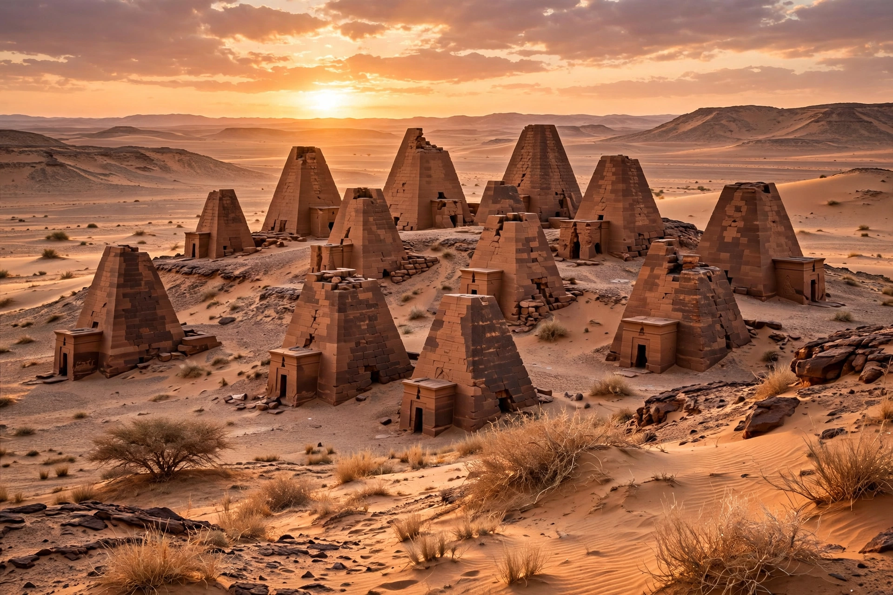

Meroë was an ancient city on the east bank of the Nile in present-day Sudan, capital of the Kingdom of Kush for several centuries from around 800 BCE to 350 CE.

| Meroë | |
|---|---|
| Location | Shendi, Sudan |
| Region | Nubia |
| Founded | c. 800 BCE |
| Abandoned | c. 350 CE |
After the Kushite capital moved south from Napata, Meroë became a centre of iron smelting, trade and agriculture. Its rulers built more than 200 steep pyramids in nearby cemeteries at Begrawiya.
The Meroitic script, derived from Egyptian hieroglyphs and a cursive form, remains only partly understood.
Excavated by John Garstang and later archaeologists; UNESCO World Heritage Site since 2011. Treasure hunter Giuseppe Ferlini damaged many pyramids in the 1830s.